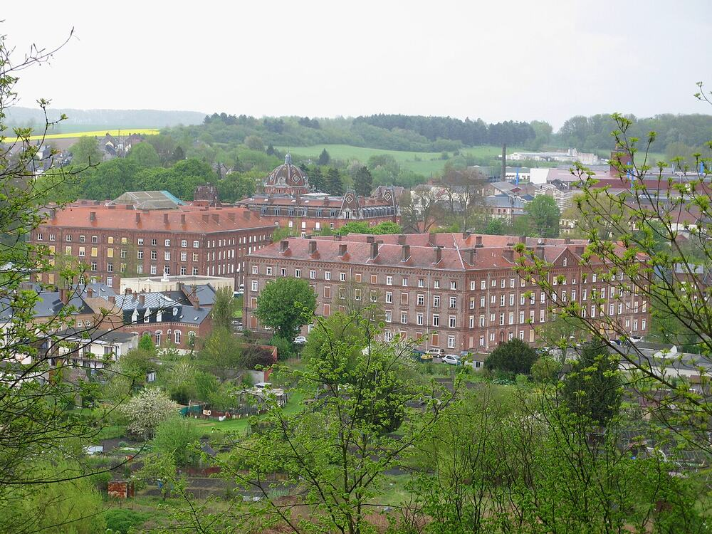
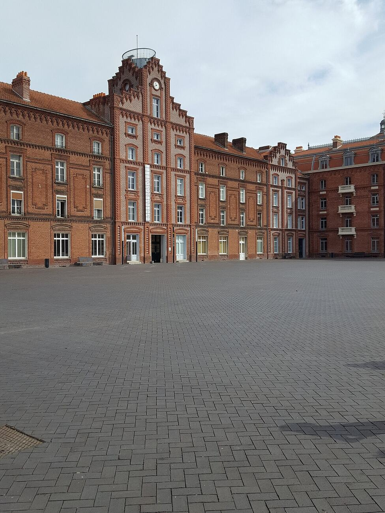

Communism before the class struggle: model villages, phalansteries and
islands that never were. The dream that every later school inherited — and spent
a century apologizing for.
The file opens in 1516, when Thomas More — lawyer, saint, and eventual headless casualty of
Henry VIII — published Utopia: a traveller's report from an island where property is common,
gold is used for chamber pots, and everyone works six hours a day. More coined the name as a pun:
ou-topos, "no place." The genre never escaped the joke.
The idea got serious after two revolutions. The French Revolution proved societies could be
redesigned by will; the Industrial Revolution produced Manchester — child labour, sixteen-hour days,
cholera — and made redesign feel urgent. Between 1800 and 1840 three system-builders answered.
Henri de Saint-Simon proposed rule by scientists and industrialists, society as one great
workshop. Charles Fourier designed the phalanstery, a commune of exactly 1,620 members where
work would be assigned by passion — he also predicted, with total confidence, that socialist seas
would turn to lemonade. Robert Owen, a Welsh mill owner, actually ran the experiment: New
Lanark's humane mills worked; New Harmony, Indiana (1825), collapsed in two years of schism and
freeloading.
A revolutionary undercurrent ran beneath the model villages: Gracchus Babeuf's Conspiracy
of the Equals (1796) plotted to seize the French state for common ownership, and was guillotined for
it. Babeuf is the hinge of this archive — the first man to die trying to make communism a
political project rather than a literary one.
02 Core Doctrine
Design over struggle
Society is a machine badly assembled. Draw the correct blueprint, demonstrate it, and rational
people — including rational capitalists — will adopt it. No class war required; several utopians
mailed their plans to monarchs and waited for a reply.
The model community
Change proceeds by working example: build one commune that functions, and it will propagate
like a proof. New Harmony, Brook Farm, Icaria — dozens were founded, mostly in America, mostly
gone within a decade.
Labour as passion
Fourier's wildest and most durable idea: work is miserable because it is misassigned. Match
tasks to temperament and the working day becomes play. Marx's "hunt in the morning, criticise
after dinner" is this idea wearing a beard.
Harmony, not dictatorship
No transitional state, no seizure of power, no enemies list. The utopians assumed the new world
needed founders, not soldiers — the single assumption every later school abandoned first.
03 Key Figures
THOMAS MORE 1478–1535 // named the genre, lost the head
ROBERT OWEN 1771–1858 // the capitalist who defected
CHARLES FOURIER 1772–1837 // architect of the phalanstery
HENRI DE SAINT-SIMON 1760–1825 // prophet of the industrial order
04 In Practice
The experiments actually ran — that is the school's glory and its indictment. New Lanark cut hours,
schooled children and still turned a profit; factory reformers cited it for decades. But the purpose-built
colonies failed with remarkable consistency: New Harmony fractured into competing constitutions within
months; most Fourierist phalanxes in America lasted under three years; Icaria dissolved in lawsuits.
The pattern — brilliant founder, devoted first generation, schism, collapse — became the standard
cautionary tale told by every school that followed.
The current never quite died, though. Kibbutzim, housing cooperatives, intentional communities and
every "prefigurative" occupation from 1968 to Occupy are this file's descendants — building the new
society in the shell of the old, one demonstration plot at a time.
05 Schisms & Enemies
vs. Scientific socialism. Engels' Socialism: Utopian and Scientific (1880) is the
hostile obituary: the utopians were honoured as pioneers and dismissed as pre-scientific dreamers who
appealed to reason when the real motor was class struggle. The insult "utopian" has meant
"unserious" inside the movement ever since.
vs. its own colonies. The school's real enemies were internal: schism, charisma-dependence,
and the discovery that abolishing property does not abolish disagreement about dishes.
06 Timeline
1516More's Utopia published in Latin at Louvain.
1796Babeuf's Conspiracy of the Equals is betrayed; Babeuf guillotined the next May.
1800Owen takes over the New Lanark mills and begins his reforms.
1808Fourier's Theory of the Four Movements — phalansteries, passional labour, lemonade seas.
1825New Harmony founded in Indiana; Saint-Simon dies the same year.
1827New Harmony collapses after two years and several constitutions.
1840sFourierist phalanxes spread across America; almost all fold within five years.
1848The Manifesto files this school under "critical-utopian socialism" — honoured, then buried.
1880Engels' Socialism: Utopian and Scientific makes the burial official.
07 Legacy
Every school in this archive is downstream of this one — Marx sharpened his "scientific" socialism
against it, the anarchists kept its communal instinct, and its habit of building the future in
miniature returns in every squat, commune and cooperative. The utopians lost every argument except
the long one: the conviction that another world is possible enough to be worth drafting.
08 Plates
The schools upstairs argue on paper. This one built. What survives of utopian socialism is architecture — the mill village and the phalanstery, standing after the doctrine stopped.
New Lanark // Owen's model village — the experiment that made him famous and cost him his fortune

Guise // Godin's Familistere, a phalanstery that actually housed people for a century

1859–1884 // the social palace as its founder drew it
Plates are vendored from Wikimedia Commons under their own licences and re-encoded to web size; the credit for each is listed in the Plate Room.